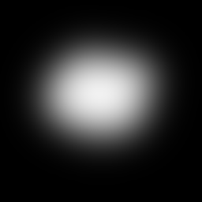
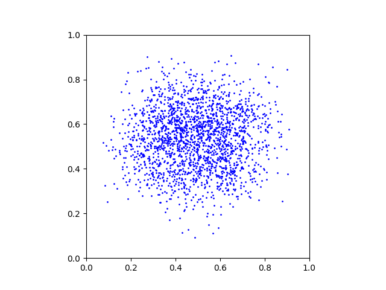
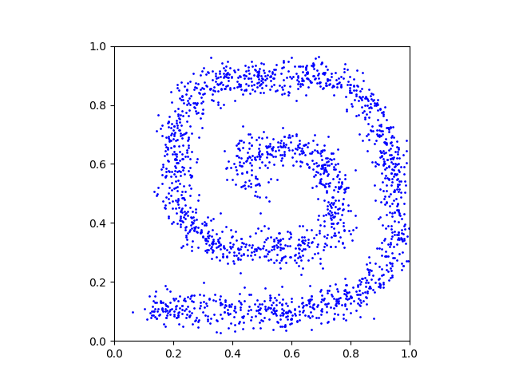
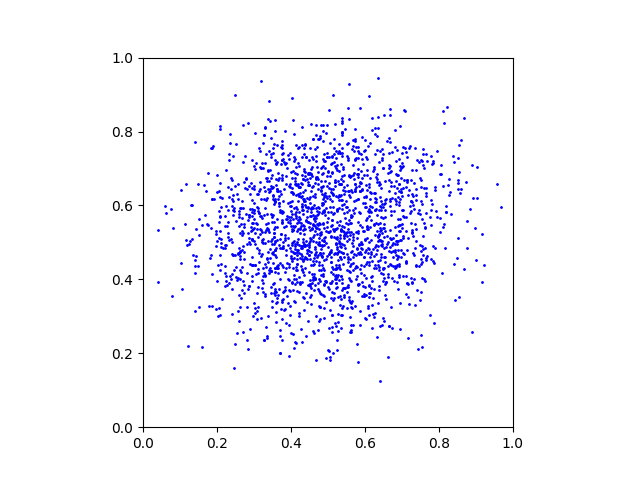

We provide a simple tutorial for Iterative 𝛼-(de)Blending applied to 2D densities. We provide a Python code and explain how it works below.
Data loading
The objective is to create a mapping between two arbitrary distributions p0 and p1. We provide these distributions as grayscale PNG images p_0.png and p_1.png:

We start by loading these images and use a rejection sampling algorithm to create a large number of samples x0 ∼ p0 and x1 ∼ p1:
# data loading
p_0 = loadImage("p0.png")
p_1 = loadImage("p1.png")
Ndata = 65536
x_0_data = generateSamplesFromImage(p_0, Ndata)
x_1_data = generateSamplesFromImage(p_1, Ndata)We provide the helper function generateSamplesFromImage() in the code. This is what a random subset of the generated samples looks like:


Neural network
We will train a neural network to learn the differential term (the tangent) of the mapping between the samples x0 and x1. A simple multi-layer perceptron is enough for this 2D experiment. Note that the input dimension is 2+1=3 because the inputs are the 2D xα points with their α value.
# architecture
class NN(torch.nn.Module):
def __init__(self):
super().__init__()
self.linear1 = torch.nn.Linear(2+1,64) # input = (x_alpha, alpha)
self.linear2 = torch.nn.Linear(64, 64)
self.linear3 = torch.nn.Linear(64, 64)
self.linear4 = torch.nn.Linear(64, 64)
self.output = torch.nn.Linear(64, 2) # output = (x_1 - x_0)
self.relu = torch.nn.ReLU()
def forward(self, x, alpha):
res = torch.cat([x, alpha], dim=1)
res = self.relu(self.linear1(res))
res = self.relu(self.linear2(res))
res = self.relu(self.linear3(res))
res = self.relu(self.linear4(res))
res = self.output(res)
return resWe allocate the neural network and its optimizer:
# allocating the neural network D
D = NN().to("cuda")
optimizer_D = torch.optim.Adam(D.parameters(), lr=0.001)Training
The training loop consists of sampling random x0 and x1, blending them with random α ∈ [0,1] to obtain xα samples, and training the network to predict x1 − x0.
# training loop
batchsize = 256
for iteration in tqdm(range(65536), "training loop"):
#
x_0 = x_0_data[np.random.randint(0, Ndata, batchsize), :]
x_1 = x_1_data[np.random.randint(0, Ndata, batchsize), :]
alpha = torch.rand(batchsize, 1, device="cuda")
x_alpha = (1-alpha) * x_0 + alpha * x_1
#
loss = torch.sum( (D(x_alpha, alpha) - (x_1-x_0))**2 )
optimizer_D.zero_grad()
loss.backward()
optimizer_D.step()Sampling
Once the network is trained, we evaluate the mapping by starting from random x0 ∼ p0 and moving the points along the direction predicted by the neural network.
# sampling loop
batchsize = 2048
with torch.no_grad():
# starting points x_alpha = x_0
x_alpha = x_0_data[np.random.randint(0, Ndata, batchsize), :]
# loop
T = 128
for t in tqdm(range(T), "sampling loop"):
# export plot
export(x_alpha, "x_" + str(t) + ".png")
# current alpha value
alpha = t / T * torch.ones(batchsize, 1, device="cuda")
# update
x_alpha = x_alpha + 1/T * D(x_alpha, alpha)This is a GIF animation made with the exported plots.
